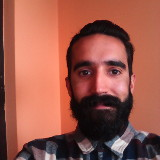

Resumen

Nombre: Jon E. Eguiluz
Email: jon.e.eguiluz@gmail.com
Telefono: +34 696441499
Fecha de Nacimiento: 30/07/1984
Experiencia
07/1984Nacimiento
09/1987Ikastola Olabide
09/2001Diocesanas Arriaga (2º Batchiller)
09/2002Mondragón Unibertsitatea (Ing. Tec. Informática de Sistemas)
09/2006Erasmus en Polonia
09/2007Mediateca Arriga Diocesanas
09/2008Alegría-activity
12/2010Buala.net
11/2015...
Conocimientos
Competencias de desarrollo web
Competencias transversales
Personal
Esta sección es solo para que me conozcas un poco, si solo te interesan los datos cuantitativos vuelve al resto de pestañas.